Laboratorio 4. Instalación de Graylog
1. Introducción
Durante el laboratorio se va a repasar el procedimiento de instalación de graylog en Docker.
De forma resumida Docker es una tecnología que nos permite un despliegue rápido de aplicaciones dentro de contenedores de software. Por lo tanto nos permite la virtualización de aplicaciones en múltiples sistemas operativos. Docker usa distintas características de los sistemas operativos para aislar y consumir recursos de los equipos, permitiendo la ejecución de distintos contenedores independientes dentro de una misma instancia.
Por lo tanto un contenedor se puede usar para ejecutar cualquier cosa, desde un microservicio o un proceso de software a una aplicación de mayor tamaño. Dentro de un contenedor se encuentran todos los ejecutables, el código binario, las bibliotecas y los archivos de configuración necesarios. Sin embargo, en comparación con los métodos de virtualización de máquinas o servidores, los contenedores no contienen imágenes del sistema operativo. Esto los hace más ligeros y portátiles, con una sobrecarga significativamente menor. En implementaciones de aplicaciones de mayor tamaño, se pueden poner en marcha varios contenedores como uno o varios clústeres de contenedores. Estos clústeres se pueden gestionar mediante un orquestador de contenedores, como Kubernetes.
Para saber más
Docker puede instalarse en sistemas Linux, Mac o Windows. Instalación de Docker Desktop en Windows 10
Instalación de Docker en Linux:
Enlaces:
2. Instalación de Graylog
Para llevar a cabo el laboratorio se necesita disponer de una máquina virtual con Ubuntu 20.04 con docker instalado, 2 núcleos y 4GB de RAM. Si hemos seguido los videos, el anexo o los enlaces deberíamos tener nuestra instalación preparada.
Antes de instalar Graylog tenemos que configurar Elastic Search, que es el motor de búsqueda, y MongoDB que se encargará del almacenamiento.
Estas dos últimas herramientas también las vamos a instalar en Docker.
Mongo DB:
# docker run --name mongo -d mongo:3
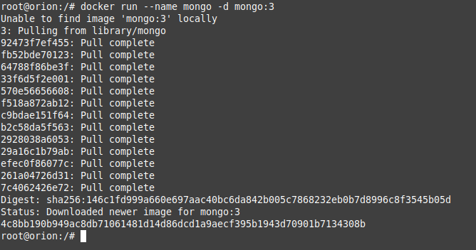
Elastic Search:
# docker run --name elasticsearch -p 9200:9200 -p 9300:9300 -e "discovery.type=single-node" -e "http.host=0.0.0.0" \
-e "ES_JAVA_OPTS=-Xms512m -Xmx512m" docker.elastic.co/elasticsearch/elasticsearch-oss:6.8.5
donde,
- Con "-p" se indican los puertos que abrimos en el contenedor y el correspondiente en nuestro host.
- Con "-e" le indicamos parámetros del contenedor en forma de variable de entorno.
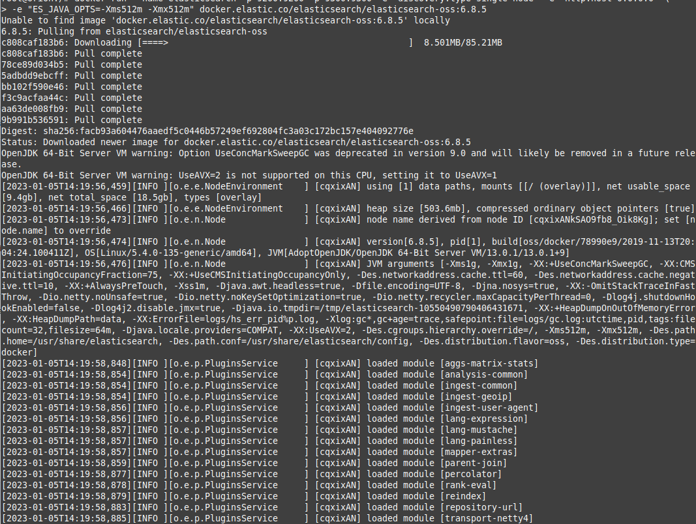
Graylog:
Abrir otra terminal u ejecutar el siguiente comando:
# docker run --name graylog --link mongo --link elasticsearch -p 9000:9000 -p 12201:12201 -p 1514:1514/udp \
-e GRAYLOG_HTTP_EXTERNAL_URI="http://192.168.0.36:9000/" -d graylog/graylog:4.0.6
donde,
- Con "--link" conseguimos que nuestros contenedores estén conectados entre sí, y de esta forma conseguir que la aplicación funcione correctamente.
Cambiar “TU_IP_LOCAL” por la IP propia a la hora de copiar el comando.
Si se accede a la terminal donde se ha ejecutado el contenedor de elastic (172.17.0.3:9200), se puede observar que se ha enlazada con graylog (bound address).
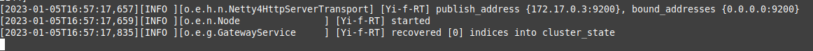
Ahora si escribimos en el navegador del equipo local (192.168.0.36) donde están corriendo los contenedores o desde un pc de la red local del mismo con el puerto 9000 nos aparecerá el login de Graylog. Las claves predeterminadas son admin/admin.
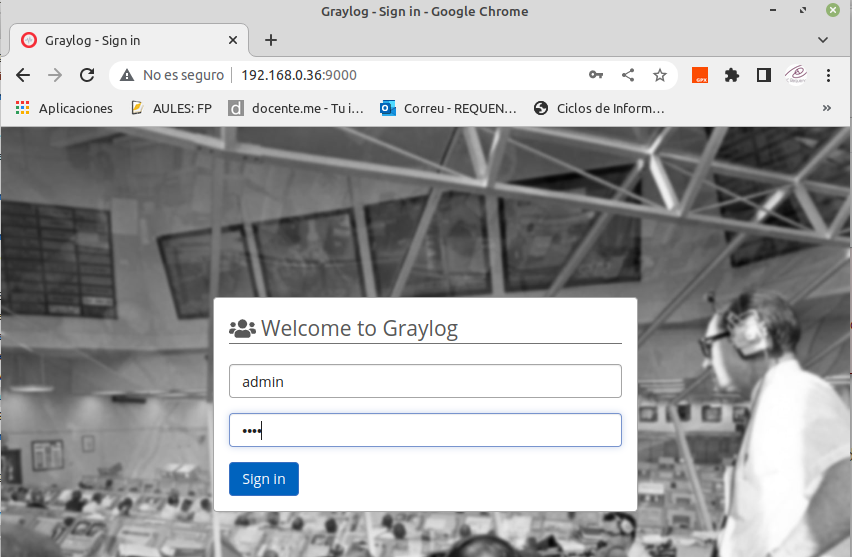
Una vez dentro ya nos aparecerá el programa de Graylog.
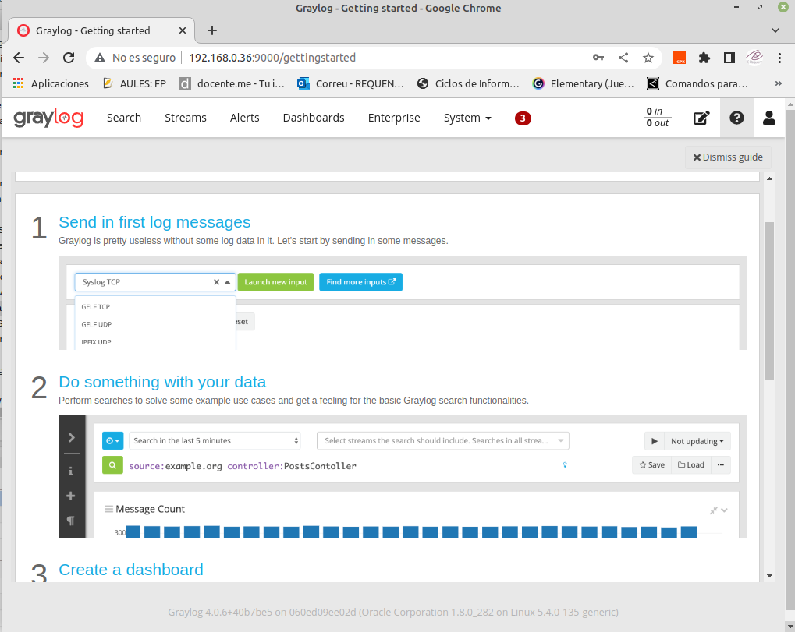
3. Configurar NXLog en Windows 10.
Se comienza con la instalación de NXLog, que es un servicio que facilita el paso de logs de Windows a Graylog.
Para ello vamos a su página web (https://nxlog.co/products/nxlog-community-edition/download) y lo descargamos haciendo clic en el icono de Windows (hay que registrarse).
Una vez descargado, aceptamos los pasos del instalador.

Ahora hay que acceder a la carpeta donde hayamos guardado NXLog. Una vez dentro, entramos en la carpeta conf, hay que abrir el fichero nxlog.conf como administrador con un editor de texto (clic derecho, Abrir con y seleccionamos Bloc de notas o el editor de texto que queramos).
| 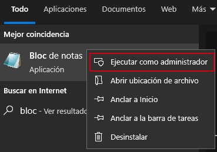 | 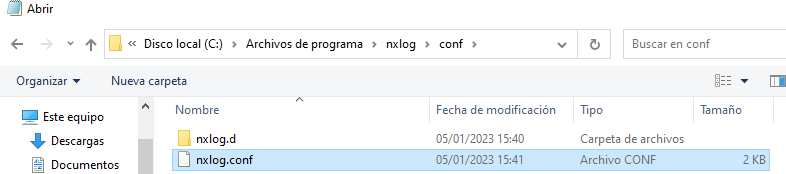 |
| Abrir bloc de notas como administrador | Abrir nxlog ubicado en C:\Archivos de programa\nxlog\conf |
Y lo reemplazaremos por el siguiente:
define ROOT C:\Program Files\nxlog
Moduledir %ROOT%\modules
CacheDir %ROOT%\data
Pidfile %ROOT%\data\nxlog.pid
SpoolDir %ROOT%\data
LogFile %ROOT%\data\nxlog.log
<Extension gelf>
Module xm_gelf
</Extension>
<Input in>
Module im_msvistalog
</Input>
<Output out>
Module om_tcp
Host IP_Equipo_Graylog
Port 12201
OutputType GELF_TCP
</Output>
<Route 1>
Path in => out
</Route>
Dentro de <Output out> hay que cambiar el Host, ahí hay que indicar la IP del equipo donde se tiene los servicios mongo, elasticsearch y graylog dockerizados, es decir, la misma que se pone para acceder a Graylog, para este caso es: 192.168.0.36.
Una vez se ha guardado el fichero, hay que acceder al apartado de “Servicios” de Windows. Para ello podemos buscarlo en el menú de inicio y luego buscar el servicio NXLog y comprobamos que está en ejecución.
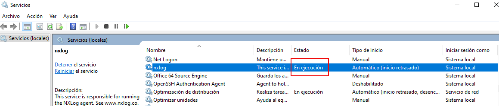
Ahora, podremos acceder a Graylog (con la IP local y el puerto 9000 en el navegador, http://192.168.0.36:9000).
A continuación, en los siguientes puntos se describe cómo añadir un intput en Garylog.
1
Para comenzar la configuración, nos vamos a System / Inputs.
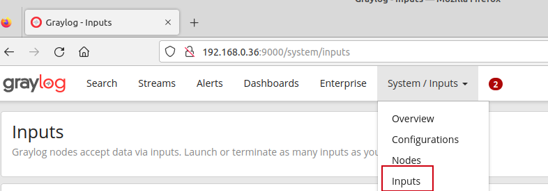
2
En el Input ponemos GELF TCP y le pulsamos en Launch new input.
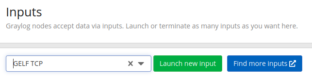
3
Nos aparecerá el siguiente menú, con seleccionar Global y cambiar el título es suficiente.
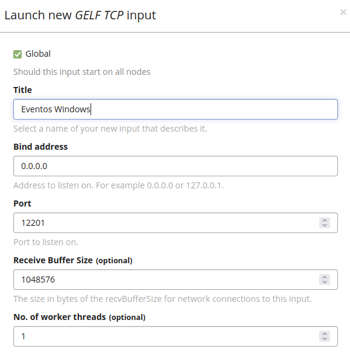
4
Nos aparecerá el siguiente panel con el estado de Running.
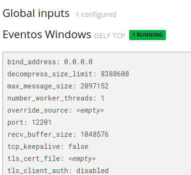
5
Ahora si nos vamos a la sección de Search, nos aparecerán todos los logs, podemos filtrarlos por las palabras que queramos, para este caso de ejemplo, ponemos sesión para filtras los eventos de inicio de sesión en el equipo.
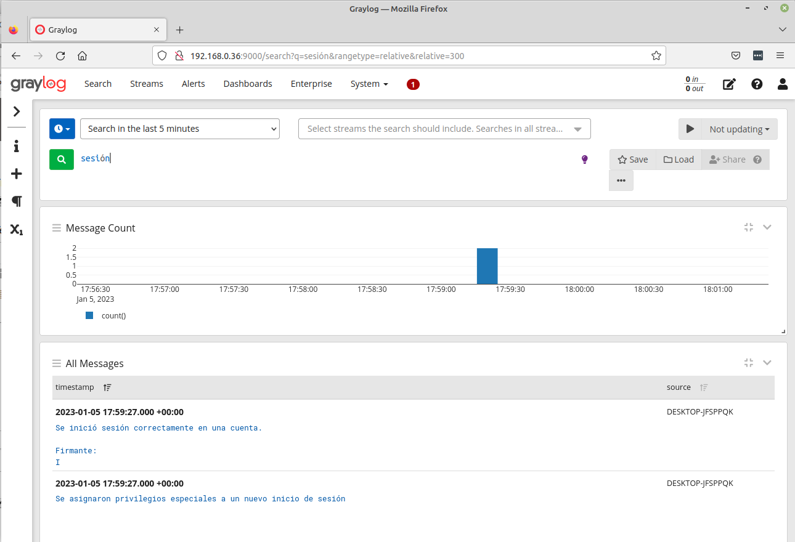
En el siguiente vídeo se realiza una breve presentación de Graylog.
Vídeo 1. Graylog.
Referencias:
Obra publicada con Licencia Creative Commons Reconocimiento No comercial Compartir igual 4.0